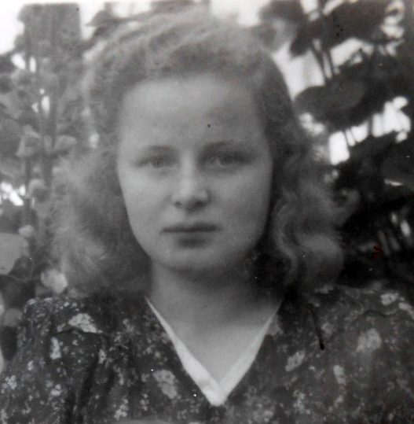
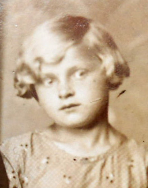
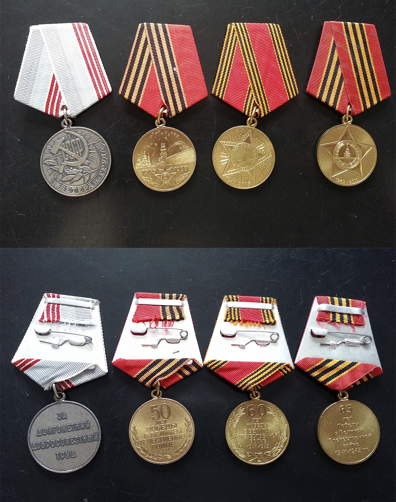

Возраст: 90
Место жительства: г. Черногорск
Окончила педогогическое училище в г. Егорьевск
С 01.08.1950 - учительница в Краснополянской начальной школе №2
С 01.09.1960 - заведующая Краснополянской начальной школы №2
С 01.09. 1980 - ушла на пенсию по выслуге лет
28.08.1985 - награждена медалью "Ветеран труда"
29.09.1993 - награждена медалью "За доблестный труд в Великой отечественной войне 1941 - 1945гг."
22.03.1995 - награждена медалью "50 лет победы в Великой отечественноой войне 1941 - 1945гг."
17.02.2005 - награждена медалью "60 лет победы в Великой отечественноой войне 1941 - 1945гг."
2010г - награждена медалью "65 лет победы в Великой отечественноой войне 1941 - 1945гг."
Отец: Юдин Павел Григорьевич (1904 - 23.02.1942)
Мать: Юдина (Шибалова) Анна Афанасьевна (1905 - 01.10.1972)
Брат: Юдин Николай Павлович (15.05.1927 - 19.08.1984)
Сестра: Миронова (Юдина) Анна Павловна (07.06.1929 - 28.12.2012)
Сестра: Гришина (Юдина) Александра Павловна (08.03.1932 - 16.10.1984)
Сестра: Киселева (Юдина) Анфиса Павловна (23.04.1935 - 20.12.2002)
Муж: Шипов Александр Иванович (05.01.1925 - 24.02.1989)
Сын: Шипов Александр Александрович (05.01.1952)
Дочь: Верхорубова (Шипова) Татьяна Александровна (01.02.1953)
Дочь: Герилович (Шипова) Анна Александровна (11.01.1960)
Родилась: 30.10.1930, п. Шувое. Отец: Юдин Павел Григорьевич. Мать: Юдина (Шибалова) Анна Афанасьевна.
Вышла замуж: 09.07.1951, п. Сереж. Муж: Шипов Александр Иванович.
Родился сын: Шипов Александр Александрович, 05.01.1952. Отец: Шипов Александр Иванович.
Родилась дочь: Верхорубова (Шипова) Татьяна Александровна, 01.02.1953. Отец: Шипов Александр Иванович.
Родилась дочь: Герилович (Шипова) Анна Александровна, 11.01.1960, с. Краснополянск. Отец: Шипов Александр Иванович.
. . . |